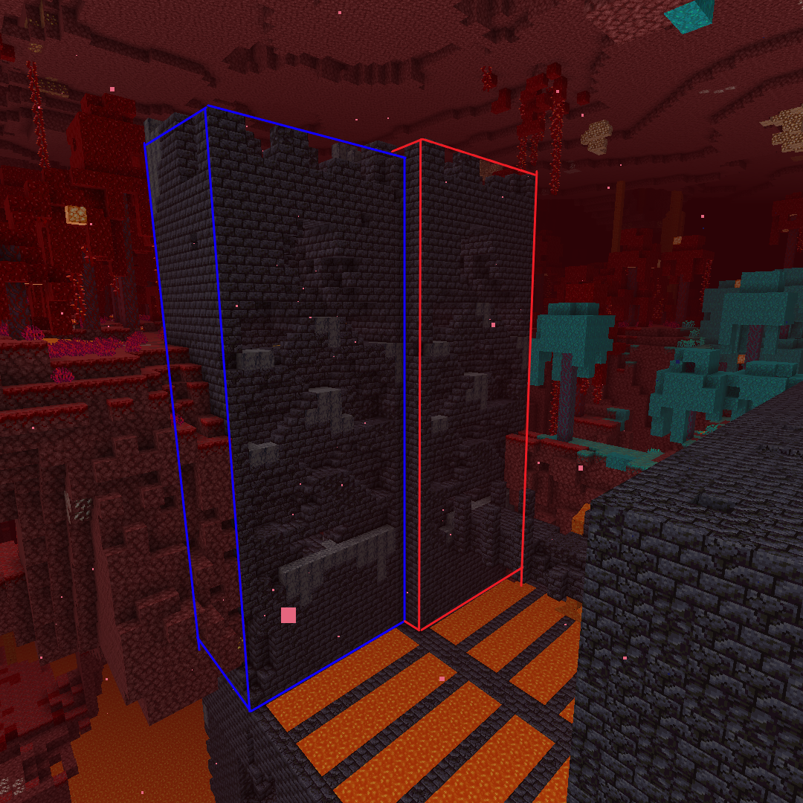

Introduction
The nether is the most important but also most dangerous part of
your speedrun.
You will need to fight dangerous mobs and navigate some structures
to obtain the resources you need to beat the game.
The main things you will need to obtain are ender pearls and blaze
rods.
There are two strategies for obtaining ender pearls: classic
bartering or bastion strats.
To obtain blaze rods, you must go to a fortress and kill blazes.
Classic bartering
Classic bartering is a beginner strategy for obtaining ender pearls
and is generally not as fast as bastion routing.
It consists of just mining nether gold ore for gold ingots and
bartering these with stray piglins and hoping for 2 ender pearl
trades.
In the version 1.16.1, there is around a 4.73% for 4-8 pearls from
each gold ingot and you would prefer to have 12+ pearls so on
average you will need two ender pearl barters to have enough to beat
the game.
Stray piglins will only spawn in the nether biomes of Nether Wastes
and Crimson Forests and they tend to wander so it can be useful
building a pit or putting them in boats so they stay in place while
bartering so you can mine more gold or look for a fortress.
Be careful since piglins will attack you when you mine nether gold
ore even if you have gold armour on.
You can give them gold ingots to distract them or simply run/kill
them.
Note that with this strategy you will tend to only obtain pearls and
not much potions of fire res/obsidian/string/crying
obsidian/glowstone and other useful items that would be obtained in
a bastion strategy.
This means it is generally slower and more linear.
Bastion Strats
Being able to get resources from a bastion is one of the most
important skills in Minecraft Speedrunning.
There are four different types of bastions and they each have random
elements to how they spawn and each of them can have multiple
different ways to route them depending on how they spawn, how
terrain generates and how you approach them.
Note that bastions will generate in every nether biome except for
the Basalt Delta biome.
What you should be hoping to obtain from a bastion is at least 10
obsidian, one fire resistance potion and 16 ender pearls.
Also looking for string can be used to craft wool which can be used
to craft beds or glowstone and crying obsidian which can be used to
craft respawn anchors.
Beds and respawn anchors are useful for the end fight.
There are a lot of useful ways to corral piglins to get them all
into one position for quick bartering such as when you break a gold
block or chest, all piglins within 16 blocks of you will be aggroed
on to you and go towards you but will still be distracted by gold.
Note that just opening a chest aggroes piglins with line of sight on
you and hitting a piglin aggroes all piglins around you and makes
the piglin you hit ignore gold you throw.
Understanding piglin mechanics is very useful for efficiently
routing bastions.
Note that the guides in these videos are outdated and are missing
newer/faster routes/techniques but they will often be better for
beginners than the fastest but riskiest routes for top runners.
Try seeking out guides to different bastions yourself and practising
them and finding out what you're comfortable with in runs.
Hoglin Stables
Often just called "Stables", this bastion consists of three upper
ramparts and two lower ramparts as well as the main section.
Here is a guide by EleventyBillion on routing stables.
Bridge
Bridge is the simplest bastion for newer runners, since the gold
blocks are all exposed away from the piglins. Just make sure you
don't die to the hoglins in the middle and try to find a spot to
barter with as many piglins as possible.
Housing Units
Housing contains two ramparts and a centre area with housing units
around.
Treasure room
Treasure is probably the most distinctive bastion, consisting of two
ramparts and a massive treasure room area separated by lava. While
the treasure room has a chest with very good loot and lots of
exposed gold, it is generally riskier and slower than using the gold
hidden in the ramparts, since the piglins are harder to collect at
the bottom of treasure room and you can get mobbed by magma cubes.

Nether Fortresses
Nether fortresses are one of the essential structures since they are
the only places you can find blazes which drop blaze rods which are
essential to beating the game.
Each nether fortress spawns with 2 blaze spawners or blazes can
spawn naturally around the fortress.
Each blaze has a 1/2 chance of dropping a blaze rod when killed by
the player.
To be safe, you generally want 7 or 8 blaze rods but can leave with
fewer if you're pushing for time.
These tend to be quite dangerous since wither skeletons roam the
fortress and blazes can snipe you from quite a long distance.
There are two sections to the fortress: the chest section which has
walls and a ceiling on the corridors and the spawner section which
is more open with the 2 spawners.
The chests can contain some useful stuff such as iron, gold and
obsidian but mostly they won't be that useful.
You want to find the spawner section since the spawners are
generally the faster way to get blazes.
The wither skeletons are more than 2 blocks high so blocking off
sections of the fortress can be useful to ensure you don't get
ambushed by them.
If you have a fire resistance potion you should use it since it
nullifies all blazes' ranged damage, although they can still melee
you if you get too close.
If you don't have fire resistance, using a shield can help to
protect you although you can still get from behind and the shield
doesn't cover your whole hitbox.
Otherwise you should try to dodge the blazes' shots since blazes
shoot three shots then have a cooldown before firing three shots
again.
Learning blazes' attacking patterns will help you to kill blazes
without dying.
Other tips are having plenty of food to regenerate health if you do
get hit and using blocks to block blazes' shots.
Exiting Nether
When you have enough ender pearls and blaze rods, it's time to leave
the nether.
If you did classic bartering you likely don't have 10 obsidian so
you will have to return to your entry portal to get back to the
overworld.
If you do have 10 obsidian then you can build a nether portal in the
nether which can potentially land you much closer to the stronghold.
There are mechanics with how the strongholds generate that determine
where you should build your nether portal for optimal distance to
the stronghold.
Note one block in ther nether corresponds to 8 blocks in the
overworld so travelling through the nether is much more efficient.
Once in the overworld you want to craft eyes of ender and follow the
direction they go to find the stronghold location.
Sleeping in a bed will often save time and be safer as you won't be
harassed by hostile mobs.
You should try to not throw too many eyes since each eye throw has a
20% chance of breaking.
Efficiently finding the stronghold is called triangulation since you
want to go away from the direction the eye was thrown a little and
throw another eye and the stronghold will be where the two eye
throws intersect.
This technique takes some practice and only really works when close
to the stronghold location.
Also note the eyes will go towards 8 ~ 8 within the starting point
of the stronghold's chunk. This means you can use the chunk
coordinates to triangulate against as well.